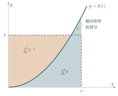

STEP III 2011，第 4 题
继续之前，请先阅读题目（原题为英文）。题目载于 STEP Support Programme 的题目资料库： step.maths.org/questions/11-s3-q4
引子
这里有一个不等式（inequality），证明它的图简单得可以画在一枚邮票上。画一条通过原点的递增曲线。曲线下方的面积，加上曲线左方的面积，总能盖住一个矩形。单凭这一个观察，就得出杨氏不等式（Young’s inequality）\(ab \leq \frac{a^p}{p} + \frac{b^q}{q}\)，而它又是通往赫尔德不等式（Hölder’s inequality）和柯西–施瓦兹不等式（Cauchy–Schwarz inequality）的钥匙，这两个不等式是分析学中最重要的工具之一。
这幅图还蕴藏着一个更深刻的想法。它以完全对称的方式把一个函数与它的反函数（inverse function）配成一对；把这种配对加以推广，就是勒让德变换（Legendre transform），它把古典力学的两大表述方式联系起来，也把热力学的两种主要描述联系起来。
动笔之前
\(\int_0^a \mathrm{f}(x)\,\mathrm{d}x\) 是曲线与 \(x\) 轴之间的面积。在同一幅图上，\(\int_0^b \mathrm{f}^{-1}(y)\,\mathrm{d}y\) 代表哪一块面积？
\(x = \mathrm{f}^{-1}(y)\) 的图像与 \(y = \mathrm{f}(x)\) 是同一条曲线，只是横着看而已。所以 \(\int_0^b \mathrm{f}^{-1}(y)\,\mathrm{d}y\) 是曲线与 \(y\) 轴之间、由高度 \(0\) 到高度 \(b\) 的面积。明白了这一点，第 (i) 部分只需要画图。
逐步解题
阶段 1 图形
画出以 \((0, 0)\) 和 \((a, b)\) 为顶点的矩形。用一种颜色涂上曲线下方由 \(0\) 到 \(a\) 的区域，再用另一种颜色涂上曲线左方由 \(0\) 到 \(b\) 的区域。这两个区域能盖住整个矩形吗？甚么时候既没有重叠，也没有多出来的部分？
这两个区域合起来盖住整个矩形 \([0, a] \times [0, b]\)，通常还盖住矩形以外的一些面积（图 3.4.1）。矩形内的每一点 \((x, y)\)，不是在曲线下方（因为 \(x \leq a\)，所以属于第一个区域），就是在曲线左方（因为 \(y \leq b\)，所以属于第二个区域）。因此涂色部分的总面积至少等于矩形的面积 \(ab\)。这就是 \((*)\)。

多出来的部分，就是曲线与矩形顶点之间那一小块曲边区域。它恰好在曲线通过顶点 \((a, b)\) 时消失，也就是当 \[b = \mathrm{f}(a).\]
阶段 2 杨氏不等式
取 \(\mathrm{f}(x) = x^{p-1}\)，\(\mathrm{f}^{-1}(y)\) 是甚么？计算两个积分，并用 \(\frac1p + \frac1q = 1\) 化简第二个。
由于 \(p > 1\)，\(\mathrm{f}(x) = x^{p-1}\) 连续而且递增，并且 \(\mathrm{f}(0) = 0\)，而 \(\mathrm{f}^{-1}(y) = y^{1/(p-1)}\)。于是 \[\int_0^a x^{p-1}\,\mathrm{d}x = \frac{a^p}{p}, \qquad \int_0^b y^{1/(p-1)}\,\mathrm{d}y = \frac{b^{1 + 1/(p-1)}}{1 + 1/(p-1)}.\] 由 \(\frac1p + \frac1q = 1\) 得 \(q = \frac{p}{p-1}\)，所以 \(1 + \frac{1}{p-1} = \frac{p}{p-1} = q\)，第二个积分就是 \(\frac{b^q}{q}\)。因此 \((*)\) 变成 \[ab \leq \frac{a^p}{p} + \frac{b^q}{q}. \qed\] 等号应在 \(b = \mathrm{f}(a) = a^{p-1}\) 时成立。验证：这时 \(ab = a^p\)，而 \(b^q = a^{(p-1)q} = a^p\)，所以右边是 \(a^p\bigl(\frac1p + \frac1q\bigr) = a^p\)。■
取 \(p = q = 2\)，这就是 \(ab \leq \frac{a^2 + b^2}{2}\)，其实是 第 3.2 节 中两个数的算术–几何平均不等式（AM–GM inequality）换了个样子。
阶段 3 反正弦
现在取 \([0, \frac\pi2]\) 上的 \(\mathrm{f}(x) = \sin x\)，它连续而且递增，并且 \(\mathrm{f}(0) = 0\)，而在 \([0, 1]\) 上 \(\mathrm{f}^{-1} = \arcsin\)。
\(\int_0^a \sin x\,\mathrm{d}x\) 很容易。你会怎样求 \(\arcsin y\) 的积分？
\(\int_0^a \sin x\,\mathrm{d}x = 1 - \cos a\)。至于反正弦，把它看成 \(\arcsin y \times 1\)，用分部积分法（integration by parts）： \[\int_0^b \arcsin y\,\mathrm{d}y = \Bigl[ y\arcsin y \Bigr]_0^b - \int_0^b \frac{y}{\sqrt{1 - y^2}}\,\mathrm{d}y = b\arcsin b + \sqrt{1 - b^2} - 1.\] 两式相加，由 \((*)\) 得 \(ab \leq b\arcsin b + \sqrt{1 - b^2} - \cos a\)。■
现在推导关于 \(\arcsin(t^{-1})\) 的不等式。应该选哪一个 \(a\) 的值？（试试最简单的那一个。）
取 \(a = 0\)：这时 \(0 \leq b\arcsin b + \sqrt{1 - b^2} - 1\)，即 \(b\arcsin b \geq 1 - \sqrt{1 - b^2}\)。（这不过是说 \(\int_0^b \arcsin y\,\mathrm{d}y \geq 0\)。）设 \(b = 1/t\)，其中 \(t \geq 1\)，于是 \(0 < b \leq 1\)，再除以 \(b\)： \[\arcsin\left(\frac1t\right) \geq t\left(1 - \sqrt{1 - \frac{1}{t^2}}\right) = t - \sqrt{t^2 - 1}. \qed\]
回顾
以图为证。只要看出合适的图，第 (i) 部分就是一个完整的证明。把几何事实转化为积分之间的不等式，是一种威力强大的技巧。
把一般结果特殊化。同一个一般的不等式，选取不同的 \(\mathrm{f}\)，就得出杨氏不等式和一个关于 \(\arcsin\) 的不等式。
最简单的选择可能正是对的选择。最后的推导用了 \(a = 0\)，这时不等式几乎是显然的。简单的情况一定要试试。
背后的数学
杨（William Henry Young）在 1912 年发表他的不等式。它之所以重要，在于它所引出的结果。假设 \(\sum a_i^p = 1\) 及 \(\sum b_i^q = 1\)。对每一对数应用杨氏不等式，然后相加， \[\sum a_i b_i \leq \frac{\sum a_i^p}{p} + \frac{\sum b_i^q}{q} = \frac1p + \frac1q = 1.\] 把各个 \(a\) 和各个 \(b\) 按比例缩放，使两个和都等于 \(1\)，就得到赫尔德不等式：对正数， \[\sum a_i b_i \leq \Bigl(\sum a_i^p\Bigr)^{1/p} \Bigl(\sum b_i^q\Bigr)^{1/q}.\] 取 \(p = q = 2\)，这就是柯西–施瓦兹不等式 \(\sum a_ib_i \leq \sqrt{\sum a_i^2}\sqrt{\sum b_i^2}\)，它说的是两个向量夹角的余弦最多为 \(1\)。赫尔德不等式是 \(L^p\) 空间理论的基础；在这些函数空间里，“距离”是用 \(\bigl(\int |f|^p\bigr)^{1/p}\) 来量度的，你会在泛函分析（functional analysis）和概率的课程中遇到它们。
勒让德变换
图 3.4.1 对 \(\mathrm{f}\) 和 \(\mathrm{f}^{-1}\) 的处理完全对称。记 \(F(a) = \int_0^a \mathrm{f}\) 及 \(G(b) = \int_0^b \mathrm{f}^{-1}\)。不等式说的是 \(F(a) + G(b) \geq ab\)，在曲线上等号成立，所以 \[G(b) = \max_a \bigl( ab - F(a) \bigr).\] 这个把凸函数（convex function）\(F\) 变成另一个凸函数 \(G\) 的运算，就是勒让德变换，而连续做两次就会回到 \(F\)。在力学中，它把拉格朗日量（Lagrangian，位置与速度的函数）转换成哈密顿量（Hamiltonian，位置与动量的函数）：这是牛顿（Newton）定律的两种等价表述，你会在大学二年级的课程中学到。在热力学中，它在能量、焓（enthalpy）和自由能（free energy）之间互相转换。对 \(F(a) = a^p/p\)，变换的结果是 \(G(b) = b^q/q\)，这就是杨氏不等式中两个指数由 \(\frac1p + \frac1q = 1\) 联系起来的原因。
思维技巧
积分就是面积。在一幅精心挑选的图中比较面积，可以证明一个从代数上难以看出的不等式。
留意这样的图：其中一个区域明显包含另一个区域，或者几个区域明显盖住第三个区域。然后把每块面积转化为积分。
延伸练习
1987 年的版本。试做 STEP I 1987，第 6 题。它用同一类图来求反函数的积分。用求导来验算你的答案。
柯西–施瓦兹。用 \(p = q = 2\) 的杨氏不等式，证明对正数有 \(a_1b_1 + a_2b_2 + a_3b_3 \leq \sqrt{a_1^2 + a_2^2 + a_3^2}\,\sqrt{b_1^2 + b_2^2 + b_3^2}\)。（提示：先处理两个平方根都等于 \(1\) 的情况。）
指数版本。在 \((*)\) 中取 \(\mathrm{f}(x) = e^x - 1\)，证明对 \(a, b \geq 0\)， \[ab \leq e^a - 1 - a + (1 + b)\ln(1 + b) - b.\] 等号何时成立？
这个界有多好？ 较难 用计算机比较 \(t = 1, 2, 10\) 时的 \(\arcsin(1/t)\) 与 \(t - \sqrt{t^2 - 1}\)。证明当 \(t\) 很大时，\(t - \sqrt{t^2 - 1} \approx \frac{1}{2t}\)，而 \(\arcsin(1/t) \approx \frac1t\)。为甚么这个界相差了一个因子 \(2\)？（看看 \(a = 0\) 时的图：多出来的部分有多少被浪费了？）
延伸阅读
J. Michael Steele, The Cauchy–Schwarz Master Class（Cambridge University Press）。第 1 章和第 9 章讲述柯西–施瓦兹不等式和赫尔德不等式，途中也谈到杨氏不等式。
Roger Nelsen, Proofs Without Words（Mathematical Association of America）。收录了杨氏不等式和许多其他的图形证明。
V. I. Arnold, Mathematical Methods of Classical Mechanics（Springer）。第 14 节正是用这幅图来解释勒让德变换。内容较深，但相关的一节很短。